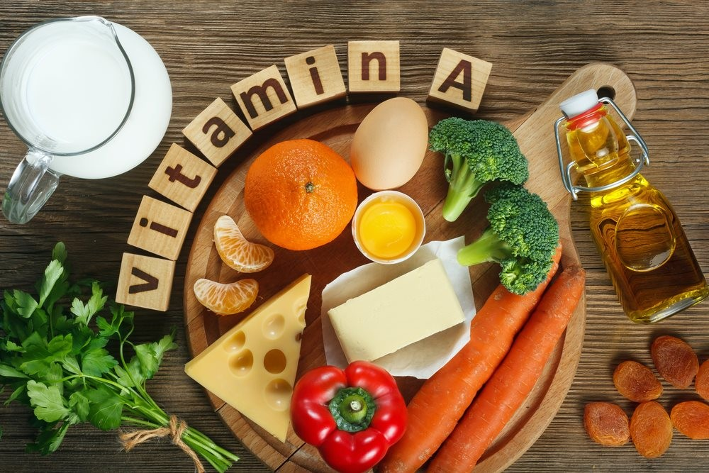

Vitamina D
Grup de alcooli liposolubili importanți în metabolismul calciului la animale pentru a întări oasele și dinții și pentru a preveni rahitismul și osteoporoza. Se găsește în uleiurile de ficat de pește și este adăugată în margarină , în lapte și în cereale pentru oamenii care nu trăiesc în zone în care se poate beneficia de soare pe timpul iernii. Pentru copii sunt de ajuns cca 10 mg/zi.
Vitamina E (tocoferol)
Grup de compuși organici liposolubili. Se găsește în anumite uleiuri de plante și în frunzele legumelor verzi. Este folosit împotriva râncezelii grăsimilor, în special a uleiurilor vegetale.
Vitamina K
Grup de compuși liposolubili esențiali pentru coagularea sângelui. Lipsa vitaminei K în organism duce la creșterea timpului de coagulare. Vitamina K1 este sintetizată de plante, iar K2 este de origine microbiană, fiind prezentă în țesuturile mamiferelor. Un precursor sintetic al vitaminei K se numește menadionă și se administrează ca supliment alimentar.
Curiozități:
Vitamina A nu se găsește în plante, dar majoritatea legumelor și fructelor conțin caroten, care este transformat de organism în vitamina A.
Vitamina B6 previne afecțiunile de piele și cele nervoase în timp ce vitamina B12 previne anemia și are rol în sinteza acidului nucleic.
Vitamina C ajută la vindecarea rănilor, asimilarea fierului, în sinteza și eliminarea hormonilor glandei suprarenale și la imunitate.
Vitamina D se formează, la oameni, prin acțiunea soarelui asupra sterolilor din piele.
Vitamina E poate prelungi viața prin încetinirea procesului de distrugere prin oxidare a membranelor. Unele specii de rozătoare au nevoie de această vitamină pentru reproducere.
În 1929, în legumele cu frunze verzi s-a descoperit o substanță liposolubilă necunoscută până atunci; această substanță era necesară organismului pentru coagularea sângelui. Litera numelui său vine de la cuvântul danez koagulation.